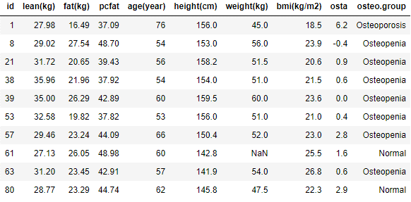
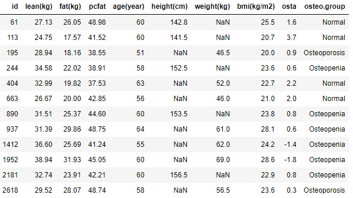
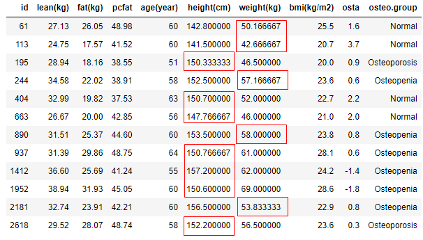
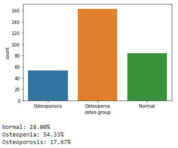
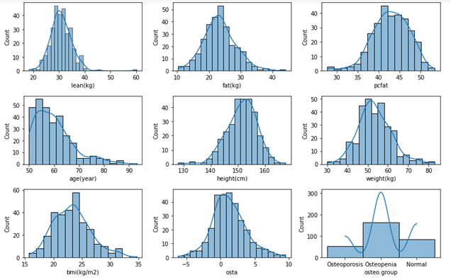
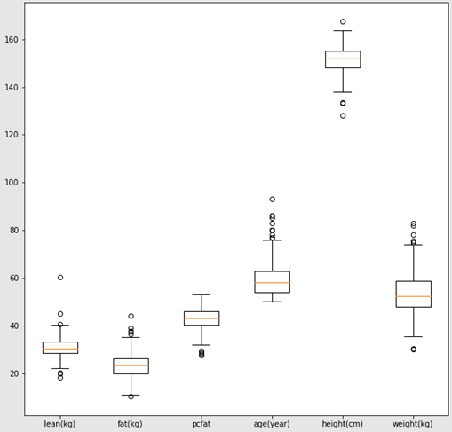
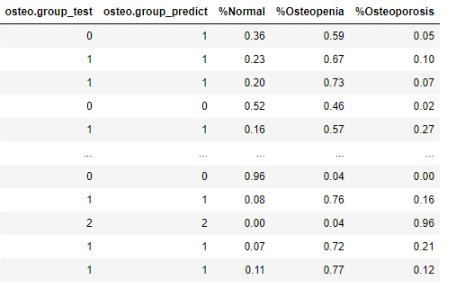
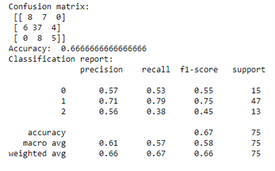
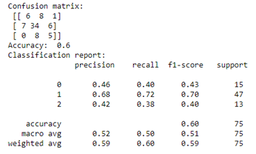

Osteoporosis prediction using machine learning
1. Background:
Osteoporosis is the most prevalent chronic bone disease that is characterized by the loss of bone density, deterioration of bone tissue, and it can lead to an increase in the risk of bone fragility (Klibanski et al. 201). From recent studies, although osteoporosis has been seen in all age groups, gender, and ethnicities, it is more in Caucasians, older people, and women.
The International Osteoporosis Foundation has recently released statistics showing that one in three women over the age of 50 and one in five men may have an osteoporosis fracture during their lifetime. Additionally, with the estimation that more than 200 million people are suffering from osteoporosis, it is believed that osteoporosis has increasingly become a global pandemic (Sözen et al. 2017). Therefore, increasing awareness about osteoporosis in the community and scientific research from health organizations worldwide is essential in preventing this pandemic. his also leads to the motivation of choosing this topic for the purpose of this project.
2. Dataset introduction:
The dataset of osteoporosis disease is extracted from a cross-sectional study involving 300 postmenopausal Vietnamese women aged more than 50 who were randomly sampled from different districts in Ho Chi Minh City, Vietnam. This research is led by Dr. Tuan V Nguyen and other researchers to determine the contributing factors to osteoporosis. This dataset consists of 300 records representing all women who are chosen for the study. There are ten features, and only one feature is categorical; the rest are numeric. The definition of this dataset is as follows. The diagnosis of osteoporosis is based on bone density measured by a DXA scan. The dataset can be accessed via this Github link. The meta data of this dataset can be found in the Github link of this project.
Example of dataset:
{kind=link}
This project aims to build a machine learning model to predict the probability of being suffered from osteoporosis disease, either osteopenia (lower bone density) or osteoporosis (severe case of bone loss that can lead to fracture).
3. Methodology:
3.1 Data pre-processing
Dataset is first checked for data types, and missing values which are appear in two features height and weight with the proportion of 2.3% and 1.7% respectively. K-Nearest Neighbors (or KNN) technique is used to impute those missing values
Example of imputing missing data
 {kind=link}
{kind=link}
The next step is to transform the response variable osteo.group from text to nominal initial-scale 0, 1, 2 representing for normal, osteopenia or osteoporosis.
3.2 Exploratory data analysis
The EDA process helps to explore the characteristics of the data including descriptive statistics, distribution, outlier detection and correlation between the features.
Example of osteo groups frequency
{kind=link}
Example of distribution shape of dataset features
{kind=link}
The histogram indicates all features appear to be approximately normal distribution except for the age feature which is right skewed. Osteo group is not in scope due to nominal variable.
Example of outlier detection
{kind=link}
3.3 Machine learning model
In this project, to predict the possibility of being suffered from osteoporosis disease, which are multiple outcomes i.e. normal, osteopenia or osteoporosis, therefore, multinomial logistic regression and random forest classifier are adopted. Dataset is split into train and test with the ratio of 75% for train and 25% for test.
Multinomial logistic regression
In this model, explanatory variables includes variables include “lean”, “fat”, “pcfat”, “age”, “height”, and “weight”, while the response variable is the encoding of osteo.group.
Example of the predicted output using logistic regression
{kind=link}
For example, the first row shows that the model predicts the possibility of 59% that this participant is suffering osteopenia, 36% is normal and very low possibility of suffering osteoporosis. Therefore, the model classifies this participant in the group of osteopenia (column osteo.group_predit). However, this participant is normal (column osteo.group_test) as in the test dataset, so in this case the model produces a bad outcome. The other outcomes seem to be consistent with test dataset.
The multinomial logistic regression model is also used to determine the impact of each explanatory variable on the odds ratio of the observed events of the disease. A Python package named statmodels is used to further assess these relationships. This demonstration can be found in the Github link below.
Example of performance evaluation of logistic regression
{kind=link}
Random forest
Random forest classifier is another technique to a multi-class response variable. As for setting up the parameters, the number of trees in the forest is set to 50, and the function used to measure the split of which feature is entropy.
Example of predicted output using Random forest

Example of performance evaluation of random forest
{kind=link}
4. Findings and Conclusion:
Given the small dataset, both techniques suggests models with the overal accuracy between 60% and 70% which are absolutely not a good predictor for all disease groups. However, the precision and recall of these models for the osteopenia group are still greater than 70% compared to the other groups.
One reason causing low accuracy could be the high correlation between the explanatory variables. This issue is also known as the multicollinearity in regression. The next work is to experiment feature selection techniques that could help to improve the accuracy.